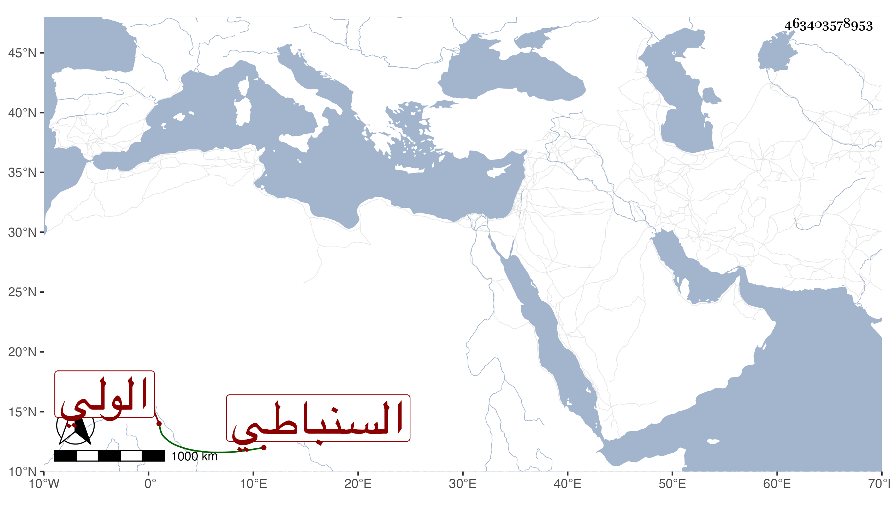

0902Sakhawi.DawLamic.ITO20230111-ara1.EIS1600.463403578953
Biography ID: 463403578953
السنباطي الولي محمد بن محمد ابن عبد اللطيف وابناه ويوسف بن عبد الغفار وأبنه العز عبد العزيز وابنه الشهاب أحمد والمحدث الشمس محمد وعبد اللطيف ابنا العلم محمد بن محمد بن مسعود وأبوهما وجدهما وابنا عبد اللطيف وهما محب الدين والشرف عبد الحق وأحمد ابنا الشمس محمد بن عبد الحق وأبوهما وابن أولهما ومحمد بن محمد بن عبد الرحمن ابن عبد الكافي .
